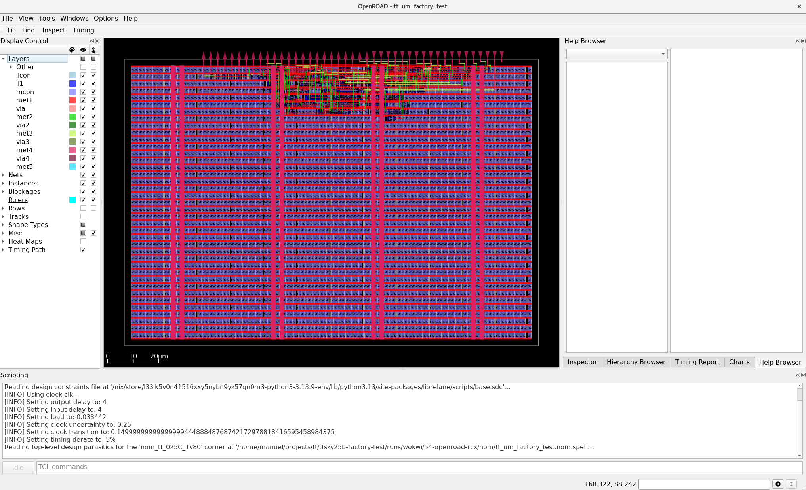
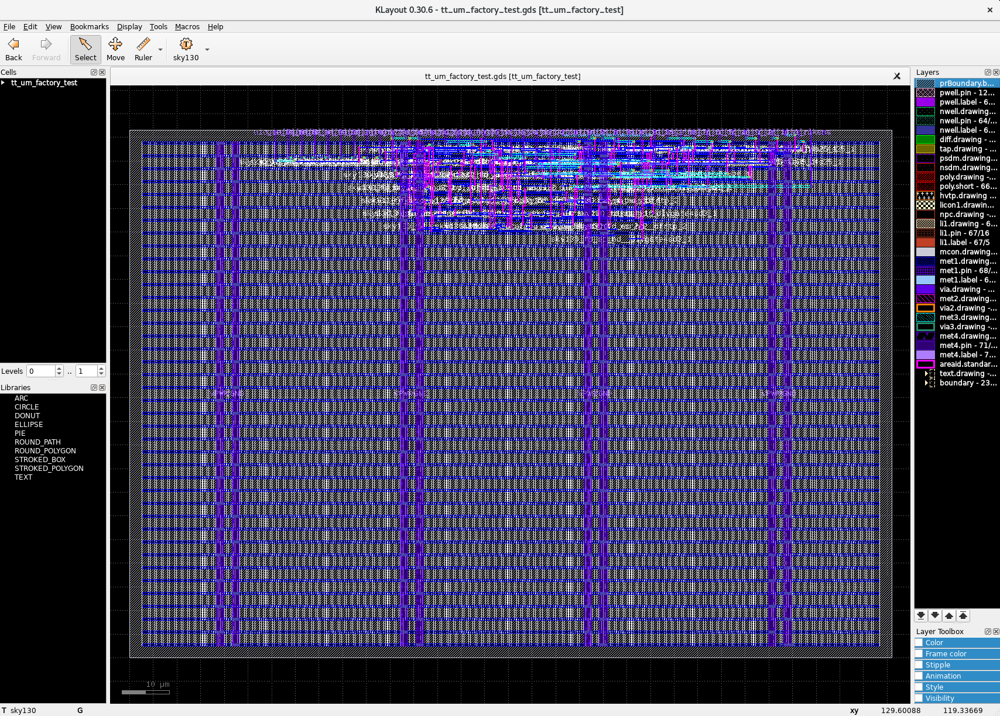

Working with Tiny Tapeout
1. Introduction
Tiny Tapeout is a service that allows you to buy small tiles within a pre-built framework to fabricate a custom chip with your design at a very low cost. For this purpose, it uses OpenPDKs from SkyWaters, GlobalFoundries, and IHP through ChipIgnite, Wafer.Space, and IHP, resepctively.
To get started, follow the instructions in this link to create an HDL project. Watch the YouTube video, it is very helpful. We will use the provided GF template in this tutorial, but you can adapt/modify it to the technology you are working with.
2. How to Submit an HDL Project
Note
Here is a link to a Tiny Tapeout video explaining the processes.
If you already have a working project, follow this instructions to submit your design.
-
Go to the repository template for your techology. For
GF180MCU: https://github.com/TinyTapeout/ttgf-verilog-template. Press theUse this templatebutton and create a new repository in yourGitHubaccount. Make the repositoryPublic. -
Enable
GitHub Actions. Follow the instructions in theREADME.mdfile in the repository. -
Add the Verilog files under
src, fill the metadata in theinfo.yaml. -
Add testbench files under
test. -
Add some documentation about your project in
info.mdunderdocs. -
Every time you push a commit,
GitHub Actionswill run thehardeningjob, which consists of producing aGDSand verifying it according toTT-Setup(Tiny Tapeout setup), and produce thedocumentationof your design to be included in the chip datasheet. -
Revise your design until yo uget all three action buttons
green. -
With the design passing all actions, go to app.tinytapeout.com.
-
Sign in with your
GitHubaccount, create a project by indicating the link to your repository, and presssubmit. -
With your project created, make it part of the tapeout by
submitting a revision. -
You can also test the
hardeningprocess locally by installing some tools and following this example. However, the final run to submit your design will go throughGitHub Actions. -
You can continue to make changes by submitting a new revision in the same app until the deadline.
3. The Tiny Tapeout Interface
Tiny Tapeout interfaces with your project using a custom interface shown in the table and code below. Code copied from https://github.com/TinyTapeout/ttihp-verilog-template/blob/main/src/project.v.
Interface Table & Code
| User Pads | Tiny Tapeout Framework | Your Design |
|---|---|---|
| rst_n | rst_n | rst_n |
| clk | clk | clk |
| ena | ena | |
| ui_pad[7:0] | ui_in[7:0] | ui_in[7:0] |
| uo_pad[7:0] | uo_out[7:0] | uo_out[7:0] |
| uio_pad[7:0] | uio_in[7:0] | uio_in[7:0] |
| uio_out[7:0] | uio_out[7:0] | |
| uio_oe[7:0] | uio_oe[7:0] |
Interface Diagram
flowchart LR
s0_p0["rest_n"]
s0_p1["clk"]
s0_p3["ui_pad[7:0]"]
s0_p4["uo_pad[7:0]"]
s0_p5["uio_pad[7:0]"]
subgraph s1["`**Tiny Tapout Framework**`"]
subgraph s10["Pads"]
s1_p0[" "]
s1_p1[" "]
s1_p3[" "]
s1_p4[" "]
s1_p5[" "]
style s1_p0 width:30,x:-15
style s1_p1 width:30,x:-15
style s1_p3 width:30,x:-15
style s1_p4 width:30,x:-15
style s1_p5 width:30,x:-15
end
subgraph s11["Signals"]
s1_p10["rest_n"]
s1_p11["clk"]
s1_p12["ena"]
s1_p13["ui_in[7:0]"]
s1_p14["uo_out[7:0]"]
s1_p15["uio_in[7:0]"]
s1_p16["uio_out[7:0]"]
s1_p17["uio_oe[7:0]"]
end
s1_p0 --- s1_p10
s1_p1 --- s1_p11
s1_p3 --- s1_p13
s1_p4 --- s1_p14
s1_p5 --- s1_p15
s1_p5 --- s1_p16
end
subgraph s2["`**Your Design**`"]
s2_p0["rest_n"]
s2_p1["clk"]
s2_p2["ena"]
s2_p3["ui_in[7:0]"]
s2_p4["uo_out[7:0]"]
s2_p5["uio_in[7:0]"]
s2_p6["uio_out[7:0]"]
s2_p7["uio_oe[7:0]"]
end
s0_p0 --> s1_p0
s0_p1 --> s1_p1
s0_p3 --> s1_p3
s0_p4 ~~~ s1_p4 --> s0_p4
s1_p4 ~~~ s0_p4
s0_p5 <--> s1_p5
s1_p10 --> s2_p0
s1_p11 --> s2_p1
s1_p12 --> s2_p2
s1_p13 --> s2_p3
s1_p14 ~~~ s2_p4 --> s1_p14
s2_p4 ~~~ s1_p14
s1_p15 --> s2_p5
s1_p16 ~~~ s2_p6 --> s1_p16
s2_p6 ~~~ s1_p16
s1_p17 ~~~ s2_p7 --> s1_p17
s2_p7 ~~~ s1_p17
4. Your Project
Repository
1. We have cloned the template repository here. You can create your own repository by going to the template repository, pressing the Use this template button, and creating a new repository in your GitHub account. Make the repository Public.
2. Enable GitHub Actions by following the instructions in the README.md file in the repository.
Design Files
3. We will use the design below in this tutorial. Add this Verilog file under src and fill the metadata in the info.yaml.
/*******************************************************************
Autor: Manuel Monge
Description:
Top-level file for a Tiny Tapeout Project.
Copyright (c) 2026 Manuel Monge
SPDX-License-Identifier: Apache-2.0
*******************************************************************/
`default_nettype none
module tt_top (
input wire [7:0] ui_in, // Dedicated inputs
output wire [7:0] uo_out, // Dedicated outputs
input wire [7:0] uio_in, // IOs: Input path
output wire [7:0] uio_out, // IOs: Output path
output wire [7:0] uio_oe, // IOs: Enable path (active high: 0=input, 1=output)
input wire ena, // always 1 when the design is powered, so you can ignore it
input wire clk, // clock
input wire rst_n // reset_n - low to reset
);
// *****************************************************************
// BEGIN: Description of your design
// *****************************************************************
//inputs
wire sclk,sen,sdi;
//outputs
wire sdo;
wire [15:0] dout;
scanchain16 #(.n(16)) scanchain0 (
.sclk (sclk),
.sen (sen),
.sdi (sdi),
.sdo (sdo),
.dout (dout)
);
// Pin Mapping
assign sclk = clk;
assign sen = ui_in[0];
assign sdi = ui_in[1];
assign sdo = uo_out[0];
// *****************************************************************
// END: Description of your design
// *****************************************************************
// *****************************************************************
// BEGIN: Unused inputs and outputs
// *****************************************************************
// All output pins must be assigned. If not used, assign to 0.
assign uo_out[7:1] = 0;
assign uio_out = 0;
assign uio_oe = 0;
// List all unused inputs to prevent warnings
wire _unused = &{ena, rst_n, ui_in[7:2], uio_in, 1'b0};
// *****************************************************************
// END: Unused inputs and outputs
// *****************************************************************
endmodule
/*******************************************************************
Autor: Manuel Monge
Description:
Generic Scan Chain (Shift Register and 'valid' register).
Inputs:
sclk: Scan clock
sen: enables the parallel load to the second parallel register
sdi: Scan chain input (MSB First)
Outputs:
sdo: Scan chain output
dout: Parallel data out
*******************************************************************/
module scanchain16(sclk,sen,sdi,sdo,dout);
parameter n=16;//number of bits of the scan chain
//inputs
input sclk,sen,sdi;
//outputs
output sdo;
output [n-1:0] dout;
reg [n-1:0] chain,dout;
//shift register
always@(posedge sclk)
chain<={chain[n-2:0],sdi};
//Scan chain output
assign sdo=chain[n-1];
//Load bits to parallel output
always@(posedge sclk)
if(sen)
dout<=chain;
endmodule
# Tiny Tapeout project information
project:
title: "" # Project title
author: "Manuel Monge" # Your name
discord: "manuelmonge85" # Your discord username, for communication and automatically assigning you a Tapeout role (optional)
description: "" # One line description of what your project does
language: "Verilog" # other examples include SystemVerilog, Amaranth, VHDL, etc
clock_hz: 50000000 # Clock frequency in Hz (or 0 if not applicable)
# How many tiles your design occupies? A single tile is about 340x160 uM.
tiles: "1x1" # Valid values: 1x1, 1x2, 2x2, 3x2, 4x2, 3x4 or 4x4
# Your top module name must start with "tt_um_". Make it unique by including your github username:
top_module: "tt_top"
# List your project's source files here.
# Source files must be in ./src and you must list each source file separately, one per line.
# Don't forget to also update `PROJECT_SOURCES` in test/Makefile.
source_files:
- "tt_top.v"
# The pinout of your project. Leave unused pins blank. DO NOT delete or add any pins.
# This section is for the datasheet/website. Use descriptive names (e.g., RX, TX, MOSI, SCL, SEG_A, etc.).
pinout:
# Inputs
ui[0]: "sen"
ui[1]: "sdi"
ui[2]: ""
ui[3]: ""
ui[4]: ""
ui[5]: ""
ui[6]: ""
ui[7]: ""
# Outputs
uo[0]: "sdo"
uo[1]: ""
uo[2]: ""
uo[3]: ""
uo[4]: ""
uo[5]: ""
uo[6]: ""
uo[7]: ""
# Bidirectional pins
uio[0]: ""
uio[1]: ""
uio[2]: ""
uio[3]: ""
uio[4]: ""
uio[5]: ""
uio[6]: ""
uio[7]: ""
# Do not change!
yaml_version: 6
Simulation/Testing Files
Tiny Tapeout uses cocotb for testing. Cocotb allows you to use Python to write your testbench and run your simulations.
4. Add the testbench file shown below under test. Notice how your design is instantiated as dut (device-under-test). Code taken from https://github.com/TinyTapeout/ttihp-verilog-template/blob/main/test/tb.v.
`default_nettype none
`timescale 1ns / 1ps
/* This testbench just instantiates the module and makes some convenient wires
that can be driven / tested by the cocotb test.py.
*/
module tb ();
// Dump the signals to a FST file. You can view it with gtkwave or surfer.
initial begin
$dumpfile("tb.fst");
$dumpvars(0, tb);
#1;
end
// Wire up the inputs and outputs:
reg clk;
reg rst_n;
reg ena;
reg [7:0] ui_in;
reg [7:0] uio_in;
wire [7:0] uo_out;
wire [7:0] uio_out;
wire [7:0] uio_oe;
tt_top dut (
.ui_in (ui_in), // Dedicated inputs
.uo_out (uo_out), // Dedicated outputs
.uio_in (uio_in), // IOs: Input path
.uio_out(uio_out), // IOs: Output path
.uio_oe (uio_oe), // IOs: Enable path (active high: 0=input, 1=output)
.ena (ena), // enable - goes high when design is selected
.clk (clk), // clock
.rst_n (rst_n) // not reset
);
endmodule
Documentation
5. Add some documentation about your project in info.md under docs.
5. Setting Up Local Tools
We will use the following guides: Local Hardening and Testing Your Design from tiny Tapeout.
Requirements
Python 3.11or newer. I am currently usingPthon 3.12.3.
- Updated version of
Docker. I am currently usingDocker 29.4.3.
- Clone Tiny Tapeout supported tools as specified in the guide above.
Python Environment and Dependencies
Note
We have used Python versions 3.11 and 3.12.3 successfully. Version 3.14 didn't work.
Create a virtual environment for Tiny Tapeout tool repository, activate it, and install dependencies.
$ mkdir ~/setups/ttsetup
$ python3 -m venv ~/setups/ttsetup/venv
$ source ~/setups/ttsetup/venv/bin/activate
$ cd [your-project-directory]/tt2606/tt
$ pip install -r requirements.txt
Set Up Environment Variables
Set up PDK_ROOT, PDK, and LIBRELANE_TAG.
Then, source it with:
Install LibreLane
Install LibreLane as shown in the TT guide.
3. Harden Your Project
Info
Hardening a Project: For Tiny Tapeout, hardening a project means going from HDL to GDS. When you call the hardening function, it uses LibreLane, inside a Docker container, to synthetize, place, and route your HDL design.
Generate LibreLane configuration file.
Harden the design.
View the design in OpenRoad.

and in KLayout.

4. Your Design
We will duplicate the current factory-test project and replicate the flow with a scanchain as our digital design.